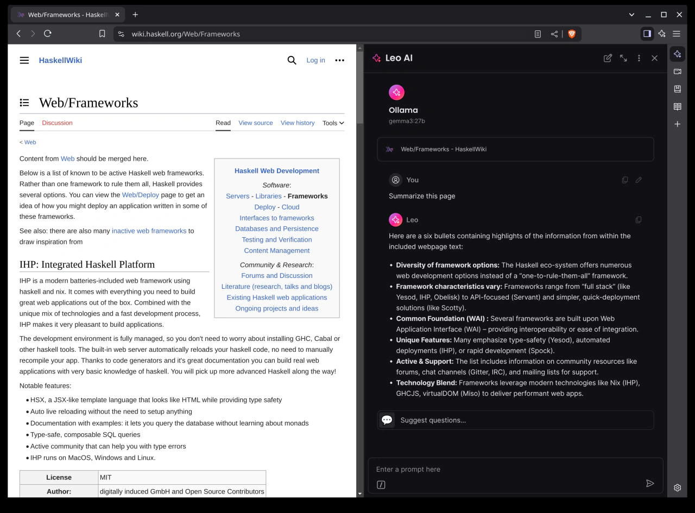

Brave + Ollama

Пока изучал GUI для Ollama, узнал, что в Brave теперь появилась возможность настраивать свою установку Ollama как backend для Leo. Тогда открытая веб-страница будет контекстом для модели.
В Brave этот подход называют BYOM — Bring Your Own Model.
Статью о BYOM можно найти в блоге Brave.